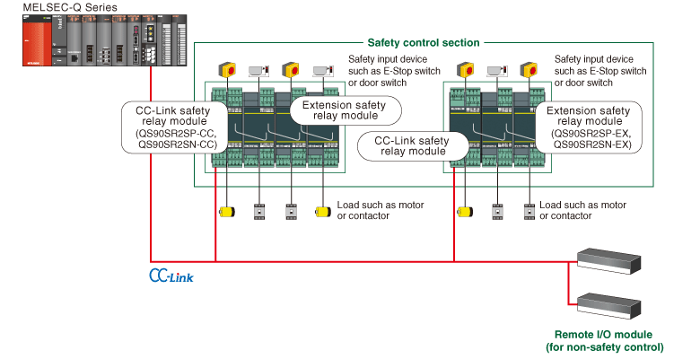
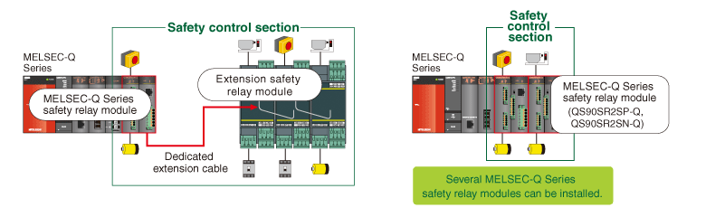

Controllers MELSEC-QS/WS Series Safety Relay Modules

End-of-sale date is February 28th 2025.
Safety relay module
The safety relay module integrates the emergency stop circuit and the restart circuit with a double safety relay. A basic safety function can be realized with just wiring, eliminating the need for programming and parameter settings. Furthermore, the number of I/O points can be increased by adding extension modules.

Safety relay module system configuration
■ Connecting to field network “CC-Link”

■ Installing on MELSEC-Q Series base unit

Lineup
| Product name | Model |
|---|---|
| MELSEC-Q Series safety relay module | QS90SR2SP-Q |
| QS90SR2SN-Q | |
| CC-Link safety relay module | QS90SR2SP-CC |
| QS90SR2SN-CC | |
| Extension safety relay module | QS90SR2SP-EX |
| QS90SR2SN-EX | |
| Safety circuit part extension cable | QS90CBL-SE01 |
| QS90CBL-SE15 |